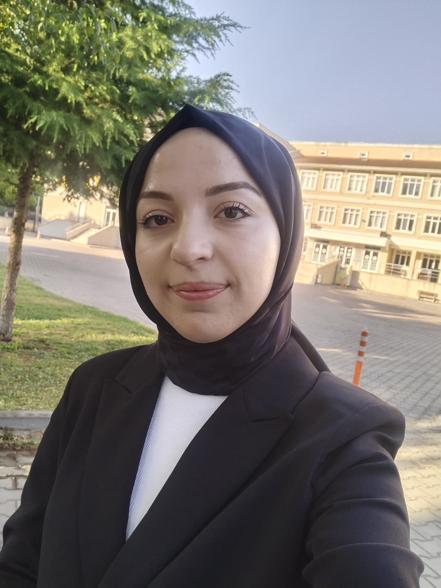
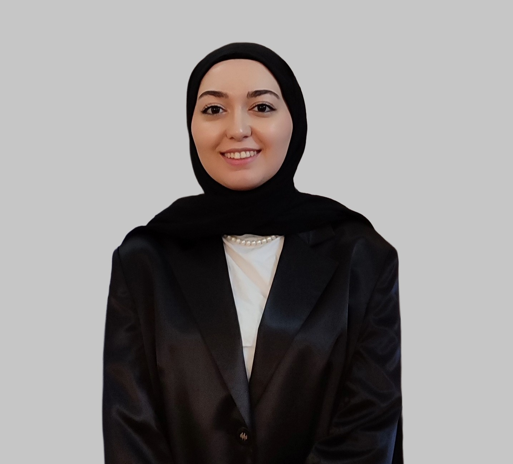

EmotionLab, özel eğitime ihtiyaç duyan çocuklar için tasarlanmış bir öğrenme platformu. Oyunlaştırılmış aktivitelerle duygusal farkındalık, odaklanma ve gerçek hayat becerileri kazandırır — mevcut ekran süresinin içinde, ek bir yük olmadan.
EmotionLab'in çocuk uygulamasını birlikte keşfedelim. Duygusal farkındalıktan günlük yaşam becerilerine, aşağı kaydırarak deneyimin farklı yönlerini görün.
Adım 1 / 6
Çocuğunuz uygulamayı açtığında, tüm dünyayı bir kerede görmez. Şu an sadece Duygu Adası aktif — diğer alanlar yakında açılacak. Bu, bilgi yükünü azaltır ve odağı tek bir alana yönlendirir.
Adım 2 / 6
10 temel duygu, her biri kendine özgü bir renk ve karakterle temsil ediliyor. Çocuğunuz bir duyguyu seçtiğinde, o duygunun adasına girer ve oradaki aktivitelerle tanışır.
Adım 3 / 6
Her duygu bölgesinde oyunlar, hikâyeler ve etkileşimli aktiviteler bulunur. Platform büyüdükçe yeni aktiviteler eklenecek — deneyim çocuğunuzla birlikte gelişiyor.
Adım 4 / 6
Her doğru cevap, nazik bir kutlamayla ödüllendirilir. Yanlış cevaplar asla cezalandırılmaz — sistem onun yerine ipucu vererek destek olur. Özel olarak üretilen karikatür yüzler, özel eğitim öğrencileri için sade ve sakinleştirici bir görsel dil kullanır.
Adım 5 / 6
Bazı anlar, bir çocuğun kendini sakinleştirmesi gerekir. Nefes balonu egzersizi, basit ve tekrarlanabilir bir ritimle — içeri çek, tut, dışarı ver — çocuğun kendi kendine sakinleşmesine yardımcı olur. Hem bağımsız pratik için hem de öğretmen/veli rehberliğinde kullanılabilir.
Adım 6 / 6
EmotionLab sadece duygusal farkındalık değil; ayakkabı bağlama, diş fırçalama, giyinme gibi günlük yaşam becerilerini de adım adım, küçük parçalara bölerek öğretir. Her adım, çocuğun kendi hızında tamamlanabilecek şekilde tasarlanmıştır.
EmotionLab veli uygulaması, çocuğunuzun gelişimini günlük, haftalık ve aylık olarak özetler; uzmanlarla görüşme talep etmenizi ve sorularınızı sormanızı sağlar.
Adım 1 / 4
Her gün uygulamayı açtığınızda, çocuğunuzun o haftaki ilerlemesini basit ve anlaşılır bir dille görürsünüz — teknik terimler değil, gerçek gözlemler.
Adım 2 / 4
Grafikler ve sayılar arka planda çalışır; siz sadece "bu hafta ne öğrendi, ne ilerledi" sorusuna net bir cevap görürsünüz.
Adım 3 / 4
Özel eğitim öğretmeni, psikolog veya dil terapisti ile online görüşme talep edebilirsiniz — okulunuz size en kısa sürede dönüş yapar.
Adım 4 / 4
Yapay zeka asistanımız, gözlemlenen verilere dayanarak size öneriler sunar. Ama unutmayın — bu bir tanı aracı değil, bir destek aracıdır. Emin olunamayan durumlarda sizi her zaman bir uzmana yönlendirir.
EmotionLab, sadece çocuklar ve aileler için değil; öğretmenler ve okul yöneticileri için de tasarlandı.
Öğretmen — 1 / 3
Hangi öğrenci hangi modülde ne kadar aktif, kim bir görüşme talebinde bulunmuş — hepsi tek ekranda. Sınıfınızın genel tablosunu saniyeler içinde kavrayın.
Öğretmen — 2 / 3
Her öğrencinin BEP hedeflerine göre dönem başından şimdiye kadarki ilerlemesi otomatik hesaplanır ve görselleştirilir — raporlama için harcanan saatler azalır.
Öğretmen — 3 / 3
Yapay zeka, öğrencinin geçmiş performans verilerine bakarak somut, ölçülebilir BEP hedef taslakları önerir. Bu, öğretmenin sıfırdan başlamak zorunda kalmadan, veriye dayalı bir başlangıç noktasına sahip olmasını sağlar — ama son karar her zaman öğretmene aittir.
Okul Geneli Görünüm
Tek bir sınıfla sınırlı değil — tüm okulun ilerlemesini, sınıflar arası karşılaştırmayı ve sistemin kendisinin ne kadar güvenilir çalıştığını tek panelden izleyin.
EmotionLab, hem aileler hem de okullar için farklı şekillerde hizmet sunar.
Bireysel kullanım için tasarlandı
Kurumsal çözüm, özel fiyatlandırma
EmotionLab, özel eğitime ihtiyaç duyan çocukların öğrenme yolculuğunu desteklemek isteyen bir ekip tarafından kuruldu.
Amacımız, çocukların zaten geçirdiği ekran süresinin içine anlamlı ve ölçülebilir bir öğrenme deneyimi sığdırmak. Her oyun, her aktivite; gerçek özel eğitim yöntemleriyle — ABA, TEACCH gibi kanıta dayalı yaklaşımlarla — uyumlu olacak şekilde uzmanlarımızla birlikte tasarlandı.
Bugün EmotionLab, ETKİM/YTÜ Teknopark bünyesinde gelişimini sürdürüyor. Çocukların duygusal dünyasını anlamamıza yardımcı olan her veli, öğretmen ve uzmanla birlikte büyümeye devam ediyoruz.
YZ çıktılarımız her zaman öneri niteliğindedir, klinik bir değerlendirme değildir.
Her yanlış cevap öğrenme fırsatıdır, asla başarısızlık değil.
Çocuk verileri en yüksek güvenlik standartlarıyla korunur.
Her aktivite, özel eğitim uzmanlarıyla birlikte geliştirilir.

